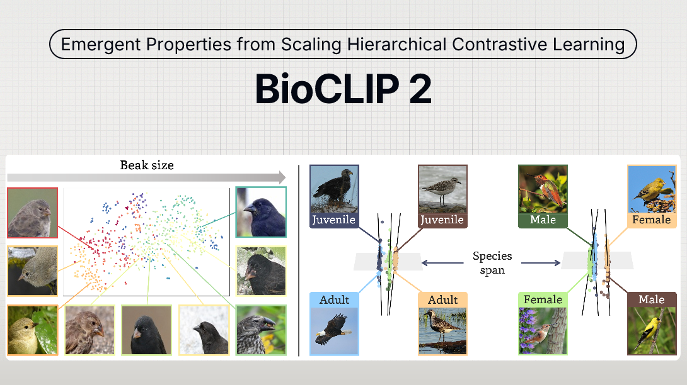
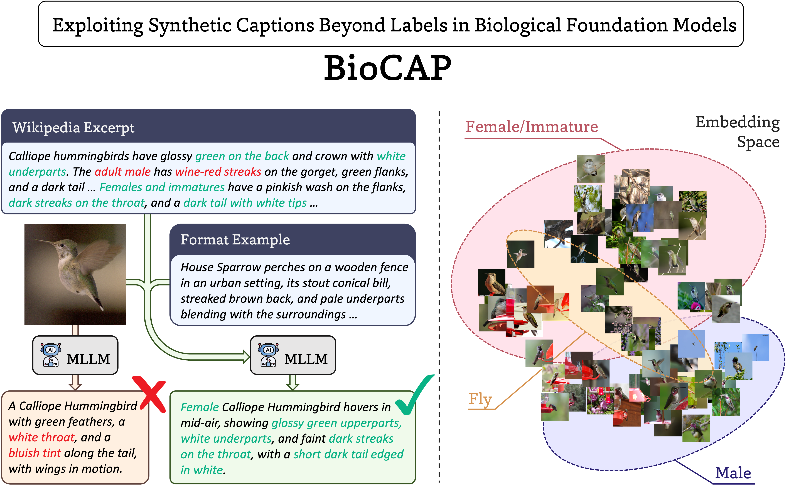
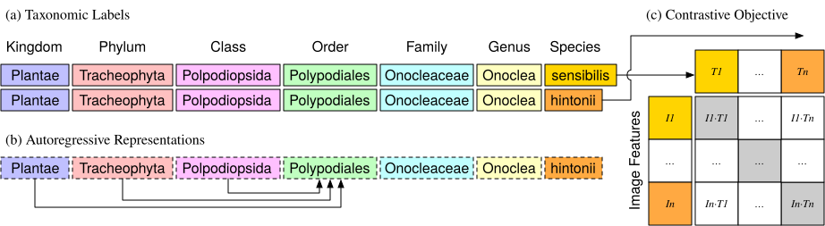

Bridging computer vision and biology. BioCLIP models learn hierarchical representations of the natural world, enabling advanced species classification, trait prediction, and more.
I need the latest model with the highest accuracy (ViT-H/14) and emergent biological capabilities. Speed and size are not an issue.
986M params · 3.9 GB fp32 · 325 GFLOPs/image
Go to BioCLIP 2.5 Huge →I have inference speed or size constraints, but need the latest model with the highest accuracy (ViT-L/14) and emergent biological capabilities.
428M params · 1.7 GB fp32 · 155 GFLOPs/image
Go to BioCLIP 2 →I need a ViT-B/16 model for inference speed or direct comparison; looking for base model trained with captions and taxonomic labels.
150M params · 0.6 GB fp32 · 34 GFLOPs/image
Go to BioCAP →I need the original BioCLIP ViT-B/16 model described in the 2024 CVPR paper.
150M params · 0.6 GB fp32 · 34 GFLOPs/image
Go to BioCLIP →The largest model in the BioCLIP collection, BioCLIP 2.5 Huge was trained on 233-million images across more than 950-thousand taxa. Training was accelerated through an updated version of the BioCLIP 2 repository (v2.0.0). BioCLIP 2.5 exhibits emergent properties, extending beyond simple classification, to distinguish between life stages, sexes, and align embeddings with ecological traits like beak size.
The model achieves new state-of-the-art performance on both species classification and broader biological visual tasks, surpassing BioCLIP 2 by 5.7% and 3.5%, respectively. Especially in FishNet, which requires the model to distinguish different habitats, BioCLIP 2.5 Huge demonstrates a 8.7% performance improvement over BioCLIP 2.

The next generation model, BioCLIP 2 was trained on 214-million images across more than 950-thousand taxa. It outperforms BioCLIP by 18.0% and provides a 30.1% improvement over the CLIP (ViT-L/14) model used as weight initialization.
Beyond simple classification, it exhibits emergent properties, such as distinguishing between life stages, sexes, and aligning embeddings with ecological traits like beak size.
BioCAP introduces descriptive captions to the original BioCLIP training regimen as complementary supervision, aligning visual and textual representations within the latent morphospace of species. This added context improves performance by +8.8% on classification and +21.3% on retrieval, demonstrating that descriptive language enriches biological foundation models beyond labels.
Trained on the TreeOfLife-10M dataset paired with TreeOfLife-10M Captions, providing synthetic, trait-rich captions generated based on morphological context and taxon-specific examples, it covers over 390,000 taxa and learns a hierarchical representation that aligns with the biological taxonomy.

The original foundation model presented in "BioCLIP: A Vision Foundation Model for the Tree of Life". It established the standard for using CLIP architectures in organismal biology.
Trained on the TreeOfLife-10M dataset, it covers over 450,000 taxa and learns a hierarchical representation that aligns with the biological taxonomy.

Each model above lists a few properties intrinsic to the model so you can ballpark what you are working with before committing to a full benchmark.
Rough throughput estimate (order of magnitude only; real-world is a fraction of peak):
* A count of the operations in one forward pass (FLOPs, roughly twice the number of multiply-accumulate operations), computed for a single 224×224-pixel image through the vision encoder and for a single label through the text encoder. It reflects the work the model does, not wall-clock speed, and shifts by a few percent depending on the counting tool; cross-checked against OpenCLIP's published model profile.